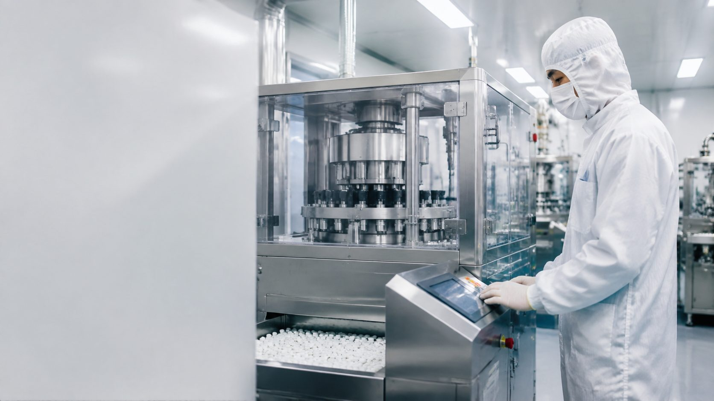

Service Network
Integrated production & quality
SILSEP products are manufactured under FAMI-QS certified quality management with batch-level traceability from raw material to shipment. Production, quality control and export logistics operate as one chain — so what leaves the line is what arrives at your mill.

Production
Modern granulation, blending and spray-drying lines under FAMI-QS certified quality management.
Quality Control
Batch-level analysis and traceability — TDS, SDS and COA documentation with every commercial shipment.

Export Logistics
Export-ready packing and documentation, shipping to 30+ countries and regions on schedule.
Global reach, regional focus
Our commercial focus follows the climate: Southeast Asia, South Asia, the Middle East and North Africa — supported by customers across 30+ countries and regions worldwide.
VietnamPhilippinesIndonesiaThailandBangladeshIndiaEgyptSaudi ArabiaUAENigeriaBrazil+ 20 more